after verrocchio, 1483
june 2025
oil on canvas, 36"x48"

after lottatori, disc. 1583
may 2025
oil on canvas, 24"x36"
{kind=link}
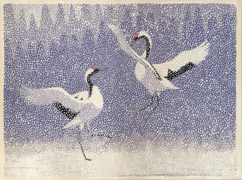
after toshi yoshida, 1994
sep 2025
oil on canvas, 24"x18"
{kind=link}
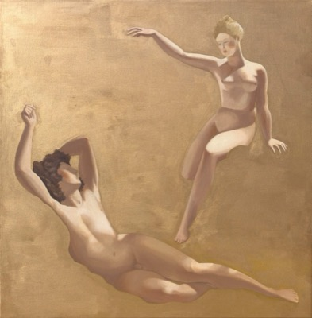
after p.-n. guérin, 1811
august 2023
oil on canvas, 36"x36"
{kind=link}
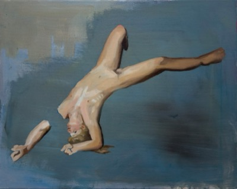
after j.-d. court, 1825
june 2023
oil on canvas, 24"x18"
{kind=link}
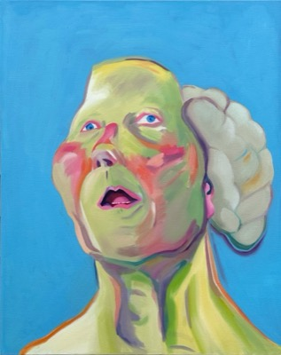
with brain,
maria lassnig,
1990
may 2023
oil on canvas, 18"x24"
{kind=link}
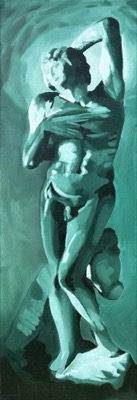
after michelangelo, 1514
january 2023
oil on canvas, 10"x30"
{kind=link}
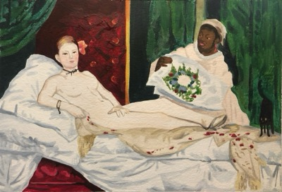
october 2022
watercolor on paper, 6.7"x4.6"
{kind=link}
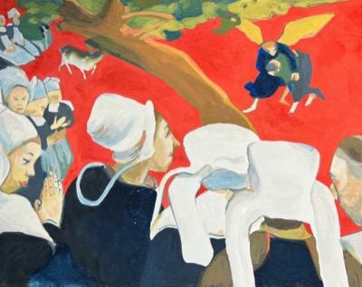
after the sermon, 1888
june 2022
gouache on paper, 5.9"x7.1"
{kind=link}
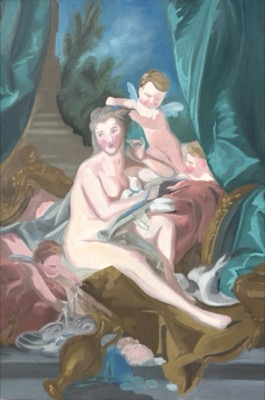
the toilette of venus,
1751
april 2022
oil on canvas, 24"x36"

after giambologna, 1583
may 2025
oil on canvas, 30"x40"
{kind=link}
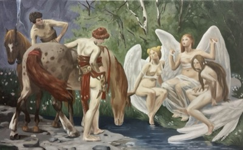
after hermann prell, 1922
nov 2025
oil on canvas, 36"x22"
{kind=link}
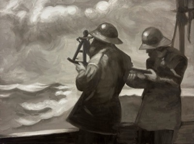
after winslow homer, 1887
oct 2025
oil on canvas, 24"x18"
{kind=link}
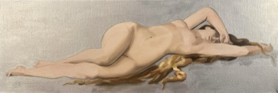
after a. cabanel, 1875
july 2023
oil on canvas, 30"x10"
{kind=link}
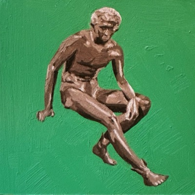
discovered 1758
june 2023
oil on gesso panel, 5"x5"
{kind=link}
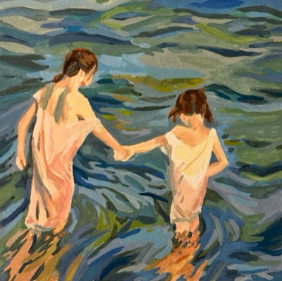
children in
the sea,
1909
february 2023
watercolor on paper, 5.9"x5.9"
{kind=link}
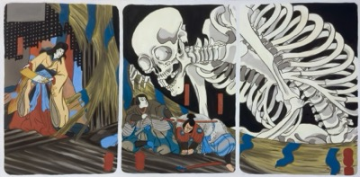
after utagawa k., 1844
october 2022
oil on canvas, 48"x24"
{kind=link}
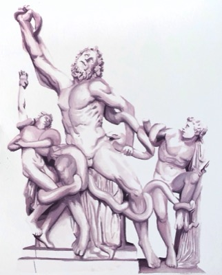
his sons,
discovered 1506,
artist unknown
june 2022
watercolor on paper, 7.5"x9"
{kind=link}
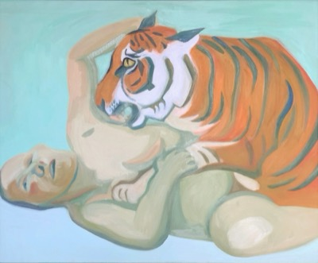
may 2022
oil on canvas, 24"x18"
{kind=link}
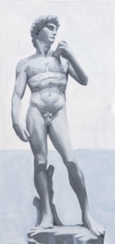
david, 1505
march 2022
oil on canvas, 15"x30"